Introduction
We are living in an environment that is tremendously impacted by economics. Our lifestyles, decisions we make, and the future that we are hoping to create are involved in the current economy. However, we would never know when the next economic crisis would hit us but what we can do is to forecast the future economy by utilizing the current and the past data that we have to prepare ourselves for the crisis so that we could avert the crisis. Stock markets are useful for us to learn about the economic changes. Through the history of the great recession in 2008 to the COVID-19 recession, we observed that stock markets performance helps us to study the current economy, and so that we are able to adjust to the financial crisis. Therefore, in this particular the study, we will be looking at the S&P 500 for which measures the stock performance of top 500 enterprises in the United States to forecast our upcoming economy performance.
The data comprises 67 financial indicators of the health of the United States economy spanning from the year 2000 to 2020. The indicators measure everything from infectious disease risk to foreign exchange state and unemployment rate. We categorize the 67 features into primarily three categories:
- External Macro Relationships: This group of time series data all share similar characteristics as they are updated every business day. They require minimal data preprocessing techniques. This group includes: multiple commodity futures, major foreign exchange pairs, different treasury related data in order to include the daily macro effects around the world.
- Internal Interactive Effects: This group of data represents the internal interactive effects within the U.S. equity market. This includes indices to measure the “mood” of the market participants. ETFs/market trackers that represent different industries are included with a goal to include the effect of different business cycles.
- Low-Frequency Fundamental Data: The previous two groups allow the models to have an idea of what is happening on a daily basis due to the high frequency of the data. However, in order to measure the financial market, it is also important to look at the lower frequency economic and fundamental data. This group includes lower frequency data that are released on a monthly/quarterly basis, hence data preprocessing techniques such as forward fill or interpolation will be needed. The economic indices are chosen in order to cover the different areas such as growth, inflation, employment, income and expenditure, and debt.
Data Cleaning / Preprocessing
As we are extracting our data from a raw real-time dataset, the dataset contains both valid, informative data and some invalid information such as missing values due to the various measure rates and holidays. To obtain a readable, clear, and understandable dataset, we will be performing data cleaning to assure the accuracy for our data modeling.
For imputing missing data, we explored multiple different data imputation strategies including but not limited to:
- Interpolate using length of interval (time)
- Forward/Backward Fill
- Rolling Statistics (Mean/Median)
To pick a strategy, we computed the R-squared values on our validation set with all the following methods to find the strategy that produced the strongest linear correlation with the target variable. Interpolating with time provided us with the best results.
First, we assume that our data’s decomposition models follow the “additive” framework, specifically:
We adopt a polynomial fitting method to remove seasonality from a subset of features (see Visualization section), which was preferred to differencing as we retain all data points of that feature. Our model for polynomial fitting is of order 4 and is analytically written as:
x is our time index, which is the day of the year (each of features are interpolated to fit a daily format), and bi are our learnable coefficients. Shown here are examples of results on a couple of the seasonal features before and after removing seasonality.
We perform linear regression on a subset of our data such that R2 ≥ 0.75. In order to remove the trend of each each signal, we subtract the the regression values at time t actual values at time t, and then add back the mean of the original signal. Examples of the transformation are depicted here.
We removed the columns where more than 1% of values were missing. This got rid of about 13% of our 4500 columns.
We computed the Mutual Information scores for all the feature engineered columns and dropped the bottom 40% of columns by mutual information.
We computed the Spearman Correlation with the remaining columns and drop columns that have a correlation coefficient higher than 0.95. A correlation heatmap generated before this operation is shown here.
After dropping columns, you can see how there are fewer darker patches at the center indicating a loss of correlated columns. We dropped around 37% (827) of the remaining columns with this step.
After using two filtering methods (mutual information and correlation), the next step is to use a wrapper method RFECV for each individual classifier. The RFECV function uses recursive feature elimination for a user-defined base estimator to rank the features and use cross-validation to select the best number of features.
Shown here is a graph for the results on a Ridge Classifier. Best validation accuracy is achieved at 12 features for this classifier. This process is repeated to find selectively eliminate features for each classifier.
After getting the best subset of features with RFECV, PCA will be applied to further reduce the dimension of our selected features. To preserve the most amount of information, we keep the number of components that can explain at least 99% of the total variance. We explored other techniques like TSNE here, but didn’t see any significant differences in model performance suggesting that PCA does a good enough job of learning model representations.
Each variable in the dataset is represented as a time series, meaning the data points are indexed in time order. The sequences in our dataset aren’t necessarily taken at successive equally spaced points. As evidenced in the example shown here, the data points for each variable are taken at different times and at different frequencies, producing many gaps to be filled.
The first factor to account for when modeling time series data is seasonality, one of the main features of a time series decomposition. Seasonality occurs when there are patterns occurring multiple times a year. It is influenced by phenomena including weather or holidays. Seasonal adjustment removes these influences of these phenomena. The majority of the features in this dataset are not seasonally adjusted. We run tests for seasonality on the non-adjusted features and remove these variations accordingly.
As this dataset contains many different measures collected at different times and rates, a majority of the values will be missing. In the displayed heatmap, each of the black pixels indicates a missing value. Some observations are that the only measures that are collected constantly throughout the date range of this dataset are the Equity Market Volatility: Infectious Disease Tracker and Equity Market-Related Economic Uncertainty indices. As both of these measure economic uncertainty, we hypothesize that these will serve as important features for our forecasting models.
Also, the data for the S & P 500 index, the target variable, don’t appear in this dataset until early 2011. 3.33% of the missingness in the training dataset is found in the S & P 500 index. For this reason, we omit all data that are collected before early 2010, one year before S & P 500 visibility, as we still need some information leading up to that point, as discussed in the previous section.
Another observation is that as indicated by the clusters of non-missing data for measures that are collected monthly, such as the unemployment rate, and the Gross Value of Industrial Products (GVIP) indicators, is that they are collected on a somewhat consistent basis within a few months that occur every two years. The unemployment rates in this dataset are collected with a Household Survey which may be administered at these points in time. The reasons for the GVIP missingness are unknown.
Additionally, the inconsistencies in the missingness patterns in the monthly data in particular suggest that the data are collected at different days within each month. This is likely due to seasonal patterns, which we visualize later in this section. We hypothesize that this will have a minimal impact on our forecasting models.
Seasonality occurs when there is a discernible cyclical pattern dependent on the date within our time series.
We run inspection tests for seasonality by first taking the subset of the dataset that contains non-seasonally adjusted features. We resample all daily features into monthly means for clarity, and retain the values of the weekly and monthly features. Of all series, we discover that the following five have some seasonal components:
- BUSAPPWNSAUS (Business Applications) - subset of all EIN (Employer Identification Number) applications
- CBUSAPPWNSAUS (Business Applications from Corporations) - subset of High-Propensity Business Applications (HBA)
- INFECTDISEMVTRACKD (Equity Market Volatility: Infectious Disease Tracker)
- T10YIE - ten-year breakeven inflation rate
- WLEMUINDXD (Equity Market-Related Economic Uncertainty Index)
The autocorrelation plots show the correlation of series with itself, when it is separated by varying time lags. We can observe the seasonality in each of the displayed autocorrelation plots as there are apparent cyclical patterns and spikes at lags equal to the period. We proceeded by removing seasonality by means of a polynomial fit, as mentioned in the Preprocessing section.
It is necessary to understand and remove the seasonal components of our time series as they lead to clearer signals, and therefore clearer relationships between our inputs and the output.
Trend is another part of a classical time series decomposition. It refers to a continuous increase or decrease over time. We test for the presence of trends in our data with a linear regression model, and we observe trend if the resulting R2 value is greater than or equal to 0.75. We find a handful of features that exhibit trends, examples of which are displayed to the side. The blue trends are the trends we extracted from the seasonal decomposition of our original signals.
We use these results combined with differencing to detrend our signals (see Data Cleaning and Preprocessing), a process we hypothesize will improve the performance of our subsequent forecasting models.
Analysis and Modeling
Given the abundance of rich data after cleaning and preprocessing and the complex non-linear ways in which the equities markets react to the economy, we felt that deep-learning based approaches should in-theory provide us the best results. Given the sequential nature of our input data, LSTM-based models were the natural choice. We explored three different sub-classes of models:
This is a run of the mill LSTM model with 50 units and trained with a learning rate set to 10-3. The unique architecture of the LSTM cell pictured here ensures that gradients don’t die down during backprop through time making it a significant upgrade especially for the 1 year timeframe where the backprop goes through many layers leading to gradients dying down and nonoptimal convergence in conventional RNN.
We chose this architecture because it uses a very different modeling approach to the underlying data generating process. This architecture bears a strong resemblance to an autoencoder and similar to an autoencoder it tries to learn good internal representations of the data generating process. Both our encoder and decoder used 200 units and were trained with a learning rate of 10-4.
ConvLSTM is another unique approach to modelling the data generating process where it combines a convolution layer with an LSTM cell. This allows the model to learn to look at both shorter time horizons and longer time horizons at the same time as can be seen in the figure (one box in the top layer is equal to 9 boxes in the bottom layer giving it a much wider field of view). This should, in theory, allow the model to exploit the best of both worlds when being evaluated on sequences of different lengths. This is also verified by the model performing similarly on all three horizons of data it was fed. This model was trained with 64 filters, 20 units and a learning rate of 10-3.
- Our models generally performed better at shorter time horizons i.e. all models recorded a lower validation error when the input sequence had fewer timesteps (1 week vs 1 year). This might suggest a failure in capturing seasonality.
- Every single model strongly overfitted to the input data suggesting a failure in learning the underlying data generating process. This might suggest that our LSTM models are way too powerful and have just gotten really good at remembering data.
- Note: The subpar performance on the validation set might not be a terrible thing if you believe in the efficient market hypothesis. Since the SPY values are standardized, Being 0.4 units away on average isn’t necessarily bad given the standard deviation is 1 unit. However, this model might not be very effective for day trading.
- Simpler models generally performed better than more complex models as can be seen by the performance of vanilla LSTM with others.
- We believe there is room for improvement and hyperparameter tuning with the encoder-decoder model as it struggled to learn an internal representation that is powerful enough to effectively separate the output signal. This is reflected in a very ragged loss curve which is highly sensitive to small movements in the hyperplane. A lower learning rate and batch size might help with faster convergence, but the model needs a different architecture to learn a better internal representation.
- ConvLSTM’s had the fastest convergence of the three models given the ease of parallelizing convolutional operations on the GPU.
Words here.
Conclusion
Words here.


 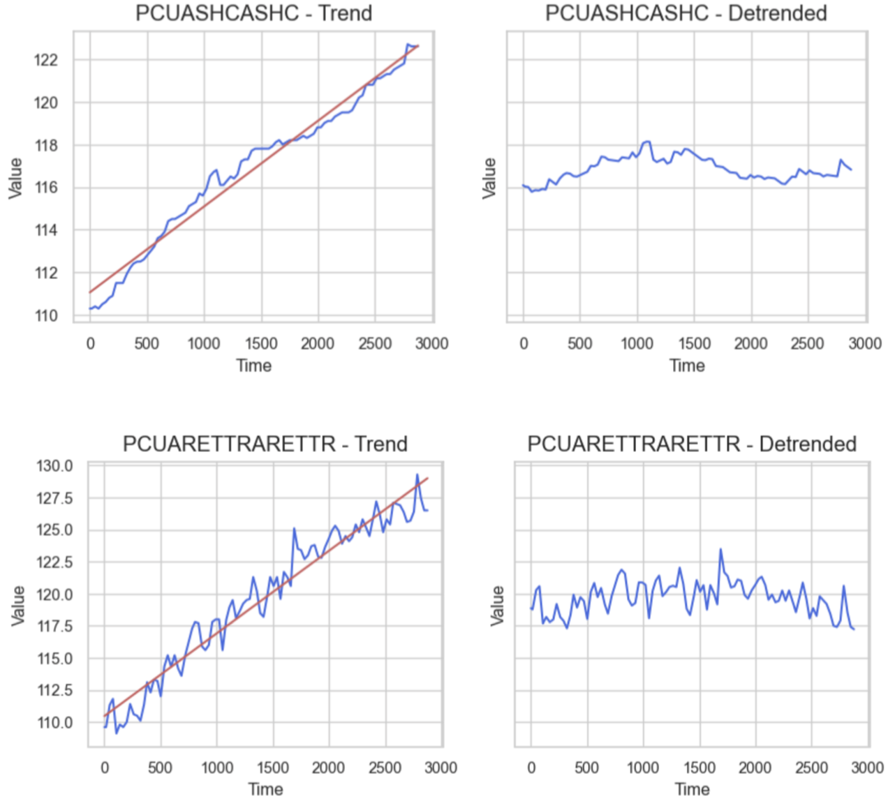
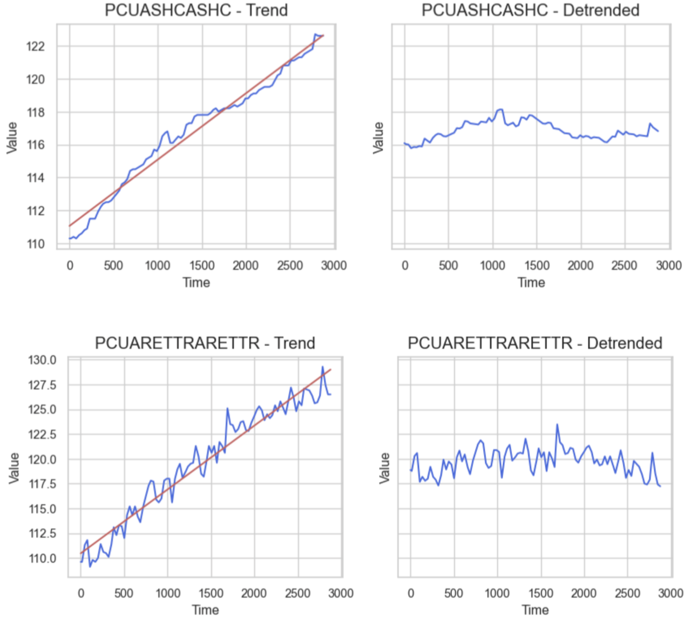


 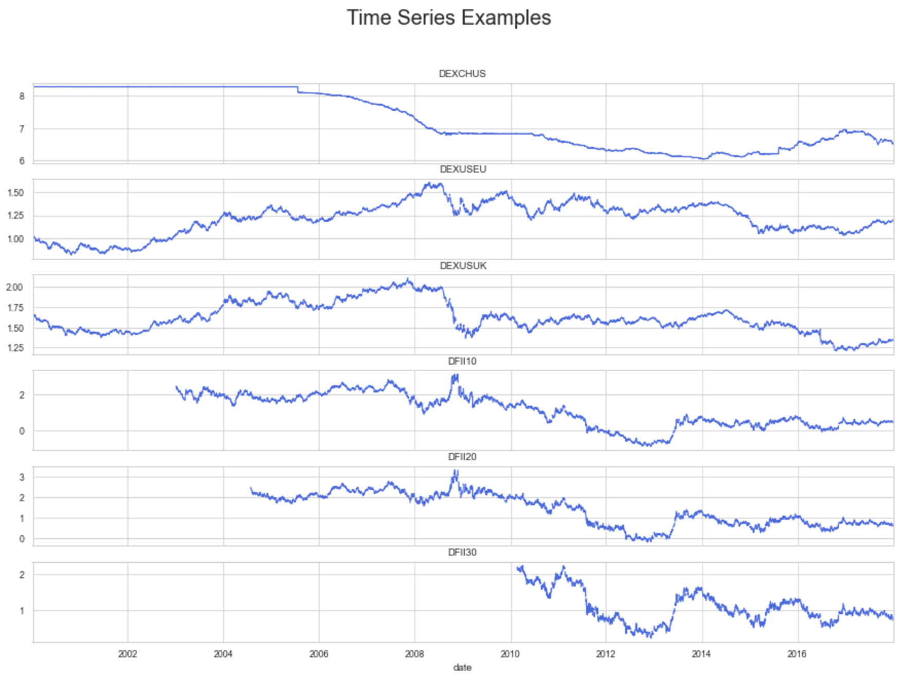
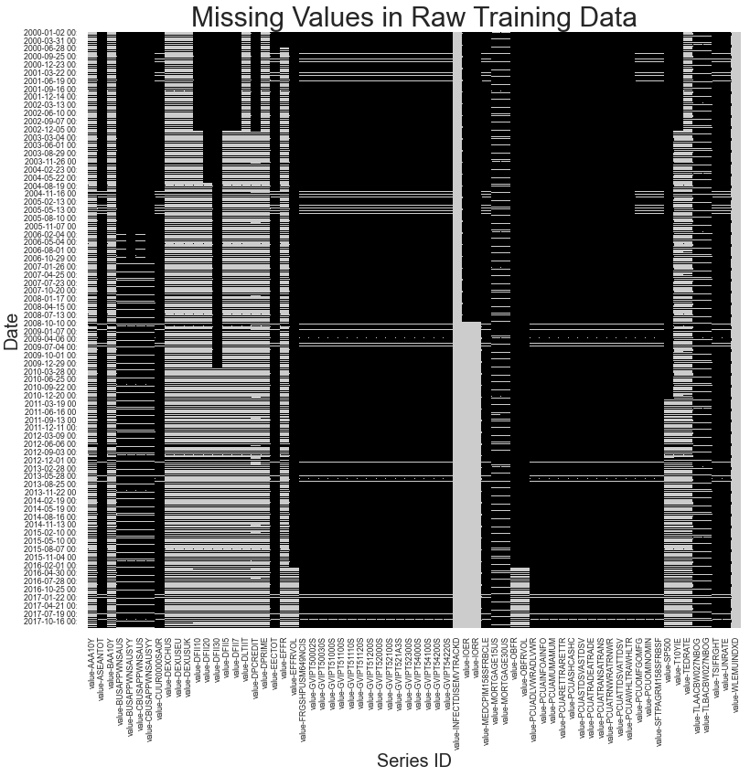
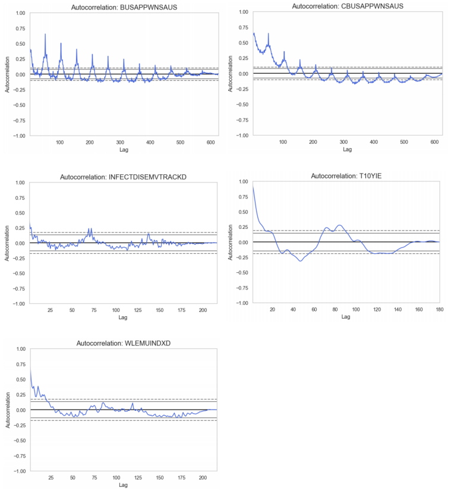
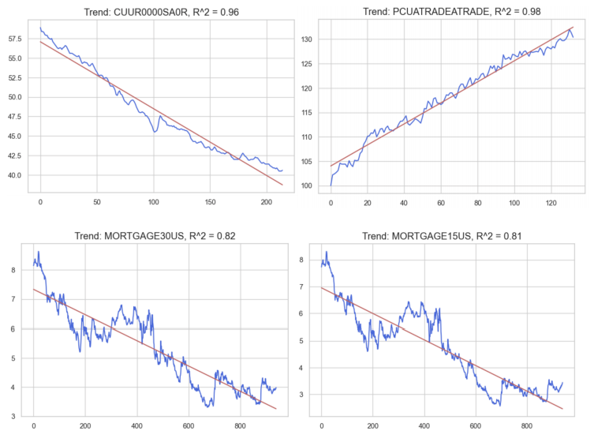
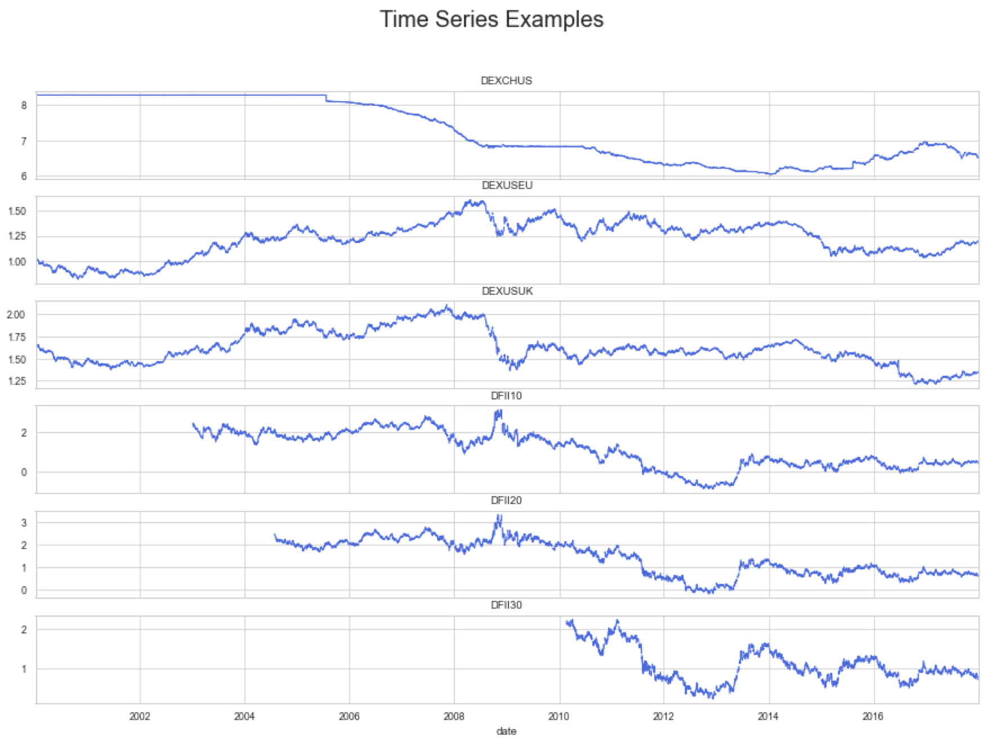
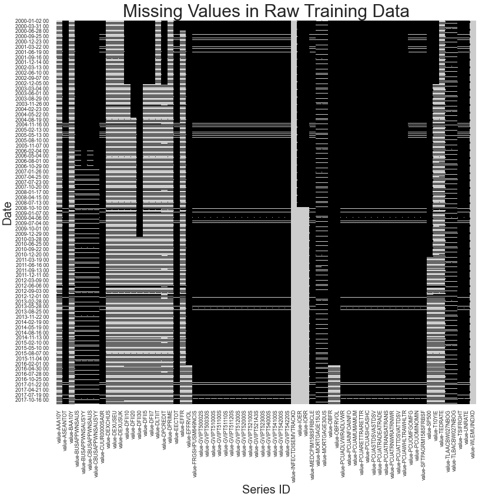
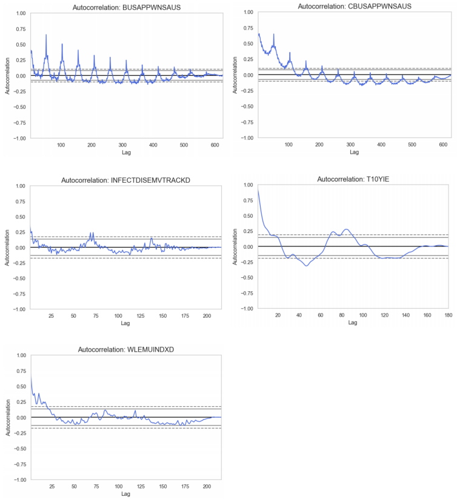
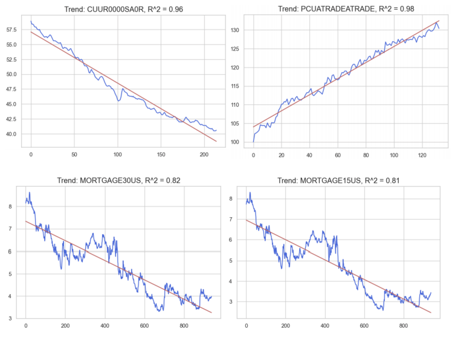

 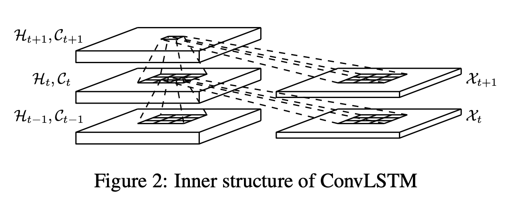
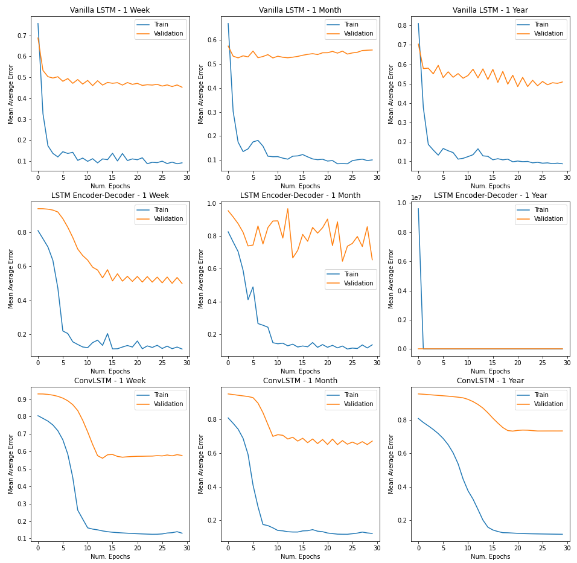
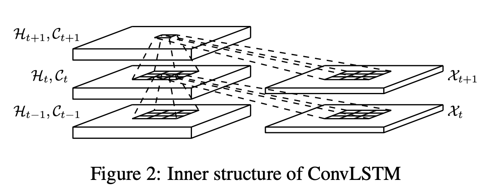
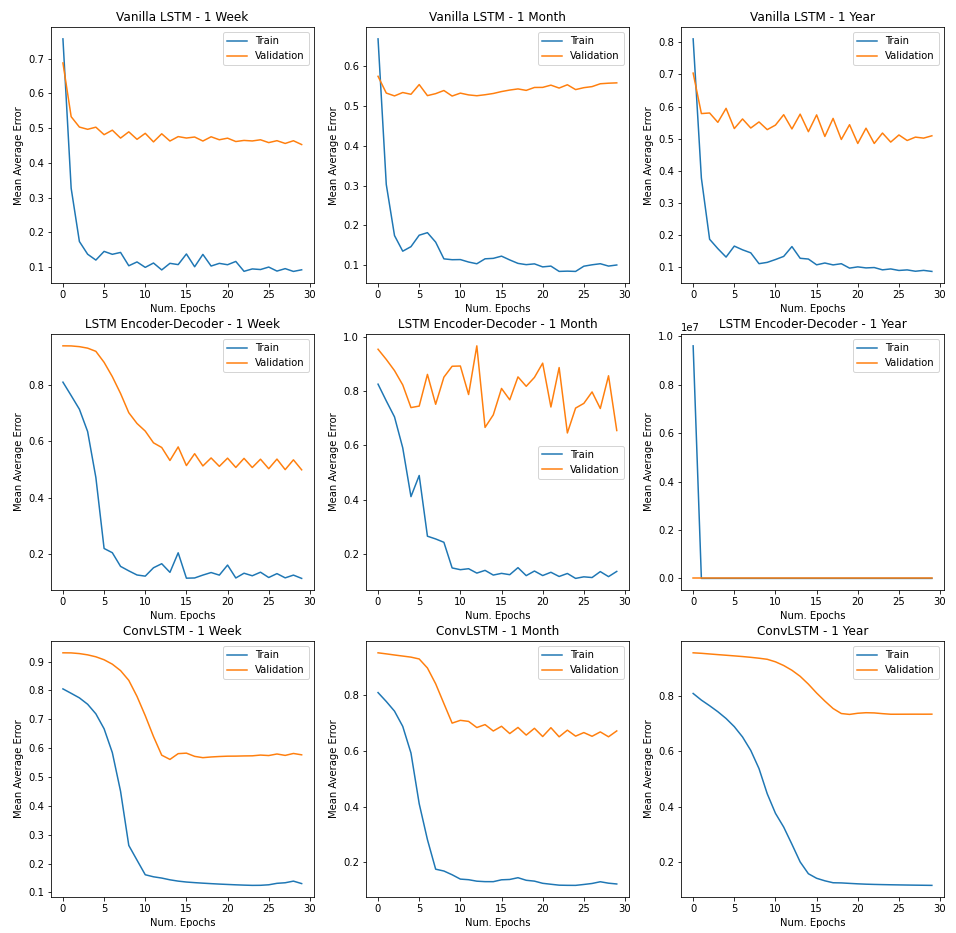